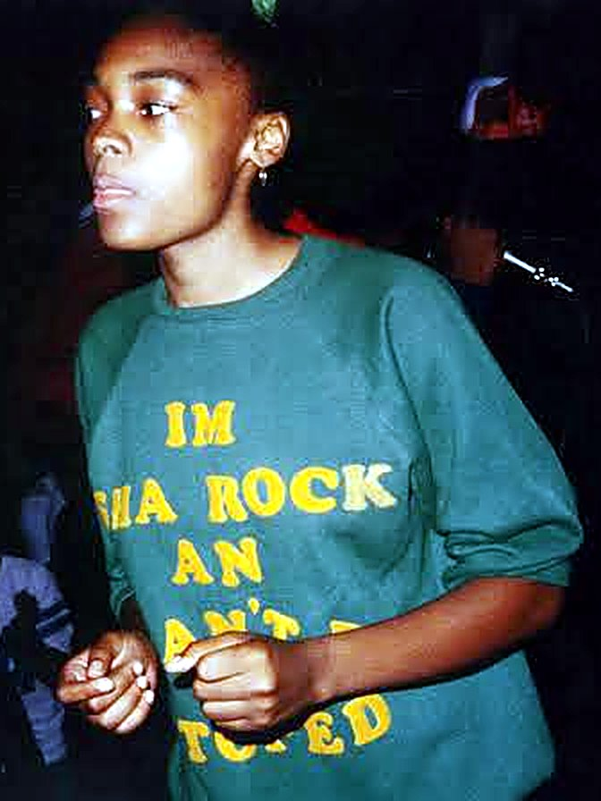
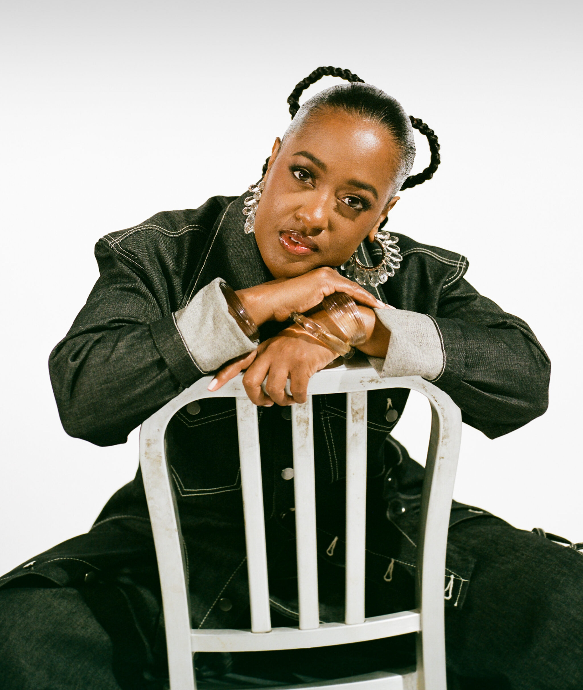
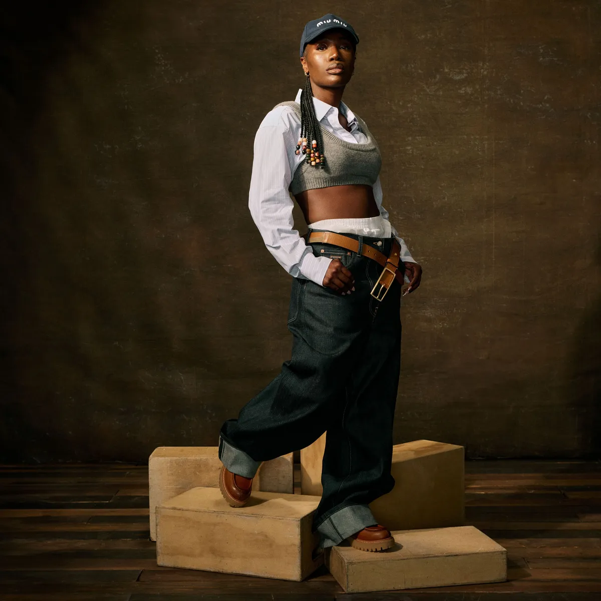

Groove Nomad · Issue N.00 · Women in Rap · 01 Sha-Rock

She wrote her first rhyme on the bus ride home in 1977. By 1981 she was on national television.
Sha-RockFunky 4 + 1The Bronx
Motherof theMic
01 · Sha-Rock
The story
Sharon Green grew up in the South Bronx, where hip-hop was taking shape. In 1976 she was a b-girl, dancing with the Legendary Brothers. A year later she auditioned for the Brothers Disco crew and won the mic. She wrote her first rhyme on the bus ride home.
She is widely credited as the first woman MC. The crew became Funky 4 + 1, with Sha-Rock as the “plus one”. Her voice, run through an echo chamber, made a sound she says influenced DMC of Run-DMC.
In 1979 the group released “Rappin and Rocking the House”, and in 1980 “That’s the Joint” on Sugar Hill. On 14 February 1981 they played Saturday Night Live, invited by Debbie Harry of Blondie: the first hip-hop group on national television.
Today she is called the “Mother of the Mic”: first on this list, and never a footnote.
Two nursing students from Queens, one class project, and the first platinum album by a female rap act.
Photograph by JANETTE BECKMAN/Getty Images
02 · Salt-N-Pepa
Story
Cheryl James and Sandra Denton met at a Sears in College Point, Queens, while studying nursing. A co-worker, Hurby “Luv Bug” Azor, had them record “The Showstopper”, an answer to Doug E. Fresh’s “The Show”, as a class project. He named them Salt-N-Pepa.
Their debut album, Hot, Cool & Vicious (1986), made them the first female rap act to go platinum. “Push It” became a worldwide hit and reached No. 2 in the UK. With DJ Spinderella, Deidra Roper, they kept going: Very Necessary (1993) sold about five million copies in the US, with “Shoop” and “Whatta Man”.
In 1995 “None of Your Business” won them a Grammy. In 2021 they received the Grammy Lifetime Achievement Award, and in 2025 they entered the Rock and Roll Hall of Fame.
Lana Michele Moorer grew up in East Flatbush, Brooklyn. She started rapping around age 12 and was 16 when her first single, “I Cram to Understand U (Sam)”, came out in 1987 on First Priority, the label of the Audio Two family.
Her debut, Lyte as a Rock (1988), is often called the first full-length album by a solo female rapper. “Paper Thin” became her signature, and “Cha Cha Cha” (1989) reached No. 1 on Billboard’s rap chart. In 1993 “Ruffneck” earned a Grammy nomination and was certified gold.
She later led the Recording Academy’s Los Angeles chapter, performed at the White House in 2014, and in 2026 entered the Rock and Roll Hall of Fame.
From Newark to the first gold album by a solo female rapper.
04 · Queen Latifah
Power and purpose
Dana Elaine Owens was born in Newark, New Jersey, in 1970 and grew up mostly in East Orange. She chose the name Latifah from a book of Arabic names at age eight, then began beatboxing for Ladies Fresh and joined the Flavor Unit crew.
Her debut, All Hail the Queen, came out in 1989 when she was 19. With Black Reign (1993) she became the first solo female rapper with an RIAA-certified album, gold, and “U.N.I.T.Y.” won her a Grammy.
She went on to act: Living Single (1993–98), then an Oscar nomination for Chicago (2002). Her Hollywood Walk of Fame star in 2006 was the first for a hip-hop artist, and in 2026 she entered the Rock and Roll Hall of Fame.
Lauryn Hill was born in East Orange, New Jersey, in 1975 and grew up in South Orange. In high school she met Pras Michel and Wyclef Jean, and together they became the Fugees. Their second album, The Score (1996), reached No. 1 on the Billboard 200.
Her solo debut, The Miseducation of Lauryn Hill (August 1998), also entered the Billboard 200 at No. 1, and “Doo Wop (That Thing)” debuted at No. 1 on the Hot 100.
At the 1999 Grammys she won five awards in one night, a first for a woman, including Album of the Year, which no rapper had won before. In 2002 she followed with MTV Unplugged No. 2.0.
From Brooklyn and Junior M.A.F.I.A. to a double-platinum debut and a Grammy.
06 · Lil’ Kim
Image and control
Kimberly Denise Jones was born in Brooklyn in 1974. In 1994 The Notorious B.I.G. invited her into Junior M.A.F.I.A., and her small frame gave her the name Lil’ Kim. The group’s album Conspiracy followed in 1995.
Her solo debut, Hard Core (November 1996), went double platinum. The video for “Crush on You” was the first with the colored wigs she became known for. The Notorious K.I.M. (2000) and La Bella Mafia (2003) also went platinum.
In 2001 “Lady Marmalade”, with Christina Aguilera, Mýa and Pink, spent five weeks at number one on the Billboard Hot 100 and won her first Grammy.
Melissa Arnette Elliott was born in 1971 in Portsmouth, Virginia. At school she formed the R&B group Sista and began working with Timbaland. Before her own album she was already writing and producing for Aaliyah, Total and SWV, among others.
Her debut, Supa Dupa Fly (July 1997), entered the Billboard 200 at number three, the highest debut for a female rapper at the time, and went platinum. Billboard later ranked her fifth among the greatest music video artists.
Six of her albums have gone platinum. In 2019 she became the first female rapper in the Songwriters Hall of Fame, and in 2023 the first woman rapper in the Rock and Roll Hall of Fame.
Groove Nomad · Issue N.00 · Women in Rap · 08 Rapsody

Photo: Wonderland
She raps in the voice of her grandmother and names whole albums after Black women who came before her.
RapsodyRoc NationSnow Hill, NC
Rapsody
08 · Rapsody
Memory and craft
Marlanna Evans was born on 21 January 1983 in Snow Hill, North Carolina. She studied at North Carolina State University, where she joined the group H2O and its spinoff Kooley High, and started working with producer 9th Wonder.
Her first album, The Idea of Beautiful, came out in 2012. In 2016 she signed with Roc Nation. She names Lauryn Hill and MC Lyte among her influences.
Laila’s Wisdom (2017) is named after her grandmother, Laila Ray, and earned Grammy nominations for Best Rap Album and Best Rap Song. Eve followed in 2019, with tracks named after Black women who shaped her.
In August 2026 she released God Gotta Afro & Gold Hoops.
Simbiatu Ajikawo was born in Islington, North London, on 23 February 1994. She built her career on her own label, Age 101 Music, and released her debut album, A Curious Tale of Trials + Persons, in 2015.
Grey Area (2019) earned her a Mercury Prize nomination and the Ivor Novello Award for Best Album. Sometimes I Might Be Introvert (September 2021) won the Mercury Prize in 2022, and she took the Brit Award for Best New Artist the same year.
In December 2022 she surprise-released NO THANK YOU, and in June 2025 came Lotus.
Grammy for Best Rap Album, 2025, for Alligator Bites Never Heal.

10 · Doechii
No single shape
Jaylah Hickmon · Tampa, FL
Jaylah Ji’mya Hickmon was born on 14 August 1998 in Tampa, Florida. She released Coven Music Session, Vol. 1 in 2019 and Oh the Places You’ll Go in 2020, then signed with Top Dawg Entertainment in 2022.
Alligator Bites Never Heal (2024) won Best Rap Album at the 2025 Grammys. “Denial Is a River” and “Catfish” carried it, and “Anxiety”, which samples Gotye and Kimbra, became her first top-ten hit on the Billboard Hot 100.
Its video won the Grammy for Best Music Video in 2026. She also won the BET Award for Best Female Hip Hop Artist in 2025.